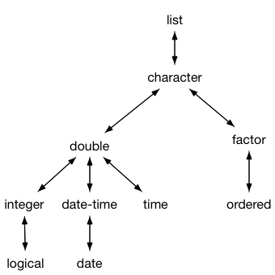

vec_cast() provides general coercions from one type of vector to another,
and along with vec_type2() forms the foundation of the vctrs type system.
It should generally not be called by R users, but is important for R
developers. vec_recast() is designed specifically for casting a bare
vector to the original type; it's useful when relying NextMethod() for
the actual implementation.
vec_cast(x, to) vec_recast(x, to) # S3 method for NULL vec_cast(x, to) # S3 method for logical vec_cast(x, to) # S3 method for integer vec_cast(x, to) # S3 method for double vec_cast(x, to) # S3 method for character vec_cast(x, to) # S3 method for list vec_cast(x, to) # S3 method for factor vec_cast(x, to) # S3 method for Date vec_cast(x, to) # S3 method for POSIXt vec_cast(x, to) # S3 method for difftime vec_cast(x, to) # S3 method for data.frame vec_cast(x, to) # S3 method for tbl_df vec_cast(x, to)
| x | Vector to cast. |
|---|---|
| to | Type to cast to. |
A vector the same length as x with the same type as to,
or an error if the cast is not possible. A warning is generated if
information is lost when casting between compatible types (i.e. when
there is no 1-to-1 mapping for a specific value).
Casting is more flexible than coercion, and allows for the possibility of
information loss. This diagram summarises possible coercions. vec_cast()
from any type connected to another type, provided that the arrows are
followed in only one direction. For example you can cast from logical to
character, and list to time, but you can not cast from logical to datetime.

Most casts are not symmetric: you can cast all integers to doubles, but you can only cast a subset of doubles back to integers. If a cast is potentially lossy, a warning message will be shown whenever an actual loss occurs (which may only be for some elements of a vector).
The rules for coercing from a list are fairly strict: each component of the
list must be of length 1, and must be coercible to type to. This ensures
that a round-trip to and form list is possible, without opening the door
to very flexible list flattening (which should be the job of a more
specialised function).
vec_cast() dispatches on both arguments because casting depends on both
the type of x and of to. This is implemented by having methods of
vec_cast(), e.g. vec_cast.integer() also be S3 generics, which call
e.g. vec_cast.integer.double().
Note that vec_cast() dispatch on its second argument, so that the name
of the final method uses the same convention as as.xyz() methods, i.e.
vec_cast.integer.double() casts double to integers, in the same way
that as.integer.double() would.
See vignette("s3-vector") on how to extend to your own S3
vector classes.
A recast is a specialised type of cast, primarily used in conjunction
with NextMethod() or a C-level function that works on the underlying
data structure. A vec_recast() method can assume that x has the
correct type (although the length may be different) but all attributes
have been lost and need to be restored. In other words,
vec_cast(vec_data(x), x) should yield x.
To understand the difference between vec_cast() and vec_recast()
think about factors: it doesn't make sense to cast an integer to a factor,
but if NextMethod() or other low-level function has stripped attributes,
you still need to be able to restore them.
The default method copies across all attributes so you only need to provide your own method if your attributes require special care (i.e. they are dependent on the data in somew way). When implementing your own method, bear in mind that many R users add attributes to track additional metadat that is important to them, so you should preserve any attributes that don't require special handling for your class.
# x is a double, but no information is lost vec_cast(1, integer())#> [1] 1# Information is lost so a warning is generated vec_cast(1.5, integer())#> Warning: Lossy cast from double to integer #> Locations: 1#> [1] 1# No sensible coercion is possible so an error is generated# NOT RUN { vec_cast(1.5, factor("a")) # }